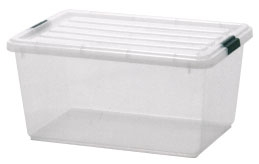
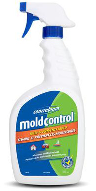
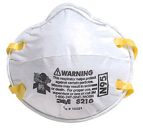

Reduce Dust
|

Sealable Plastic Tub
|
- Any clothing / fabric items / rugs which are not stored in sealed cupboards. Take them outside and shake when cleaning.
- Reduce clutter - store items not in regular use in sealable plastic tubs so they dont need to be dusted
- Items may be taken outside to dust
|
Reduce Mold
|

Concrobium Salt
|
- Where possible use a cloth dampened with Concrobium Salt to wipe down dusty surfaces (not delicate surfaces like television screens)
- Wipe down surfaces, window-sills, door frames, baseboards with concrobium salt
- Use Concrobium Salt to clean bathrooms (except windows / mirrors / toilet bowl)
|
Reduce Odors
|
- Allow clothes to dry thoroughly before putting them in drawers
- Use natural cleaning products
|
|
Tips for people with Asthma or respiratory issues
|

N95 Mask
|
- Wear an N95 mask when house is being vacuumed / dusted
- Wear an N95 mask when disposing of vacuum cleaner dust
- Try to schedule cleaning so that you can leave the house for a few hours after cleaning to allow stray dust to settle
- Vacuum more regularly so that dust does not get a chance to build up
|